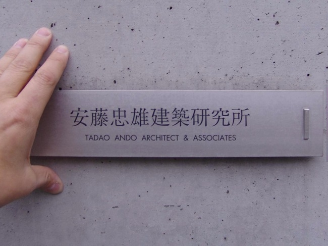

Tadao Ando’s emotional geography is a multitude of places and people with whom
he has lasting relationships of reciprocal trust. Ando was born a few minutes
before his twin brother in 1941 in Osaka. At age two, the family moved to Kobe,
where he was raised by his grandmother. Back in Osaka, he worked as a boxer
before deciding to become an architect.
The first impression of Tadao Ando's architecture is its materiality. His powerful concrete walls set a
limit. Beyond this point there is no passage but that which is opened by his will. A second impression
of Tadao Ando's architecture is its tactility. Hard walls seem soft to the touch. They exclude then
enclose, admitting light, wind and the passing visitor, who leaves behind the disorder of everyday
existence to be sheltered in a realm of stillness. A third impression of Tadao Ando's architecture is
its emptiness. Within, only light and space surround the visitor.
Works in Osaka
Born in Osaka in 1941, Tadao Ando is unusual in that he was self-educated as an architect, largely
through travels in the United States, Europe and Africa (1962-69). He founded Tadao Ando Architect &
Associates in Osaka in 1969. When asked how he came to be interested in architecture, he replies, "As it
happens work was carried on where I lived when I was 15, and I got to know some of the carpenters. About
the same time, in a used book store I saw a book on the complete work of Le Corbusier. I recopied some
of his drawings, and I would say that that is how I began to be interested in architecture."
The international travel ban for Japanese citizens was lifted in the year of the 1964 Tokyo Olympics. The
young Ando, who was an admirer of Le Corbusier, the father of modern architecture, headed out on a
voyage to Europe.

It is important to reexamine yourself and discover the person you are through your first-hand encounters
with values that differ from your own. --Tadao Ando.
Ando arrived in Europe after taking a ship from Yokohama to the Soviet Union and riding the
Trans-Siberian Railway for a week to Moscow.
He saw many architectural masterpieces during his trip, including the Parthenon in Greece and the
Pantheon in Rome.
What he especially wanted to see were the buildings of Le Corbusier, whom he had admired ever since he
found a monograph of his work in a used bookstore. The architect, who took a stand against academism and
never ceased to fight, very much became a role model for Ando.
Ando considers that experience of traveling the world for several years in his twenties as the starting
point of all his work in architecture.
He traveled many more times after that to places around the world from Asia to the Americas, and on each
trip, he documented the architecture and lives of the local people in his sketchbooks.
Architecture encompasses things that cannot be captured through the media. This is why architects must
travel; architects are made through traveling. (Tadao Ando)
After traveling the world and meeting many leading figures from a variety of fields, Ando founded his own
design studio in his hometown of Osaka in 1969.